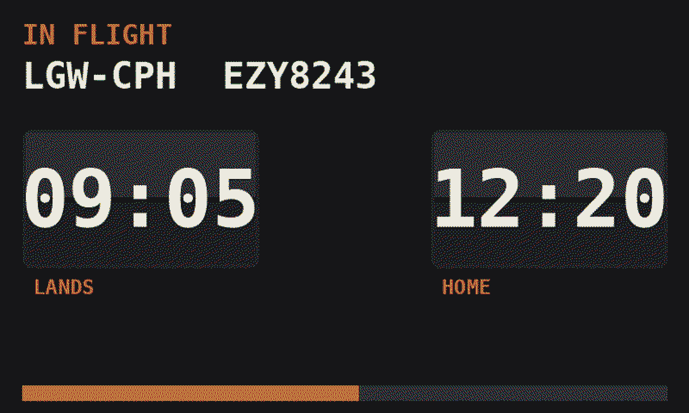
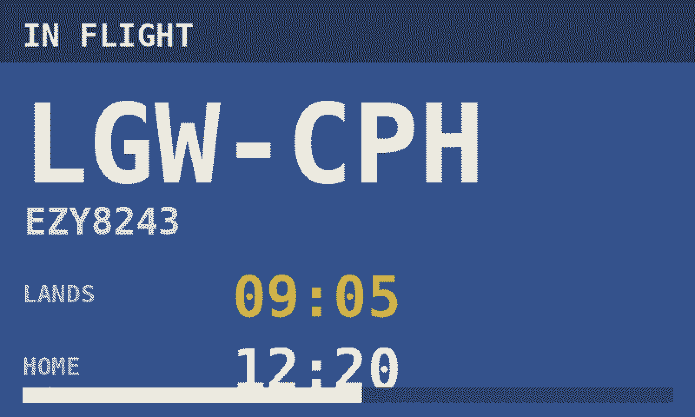
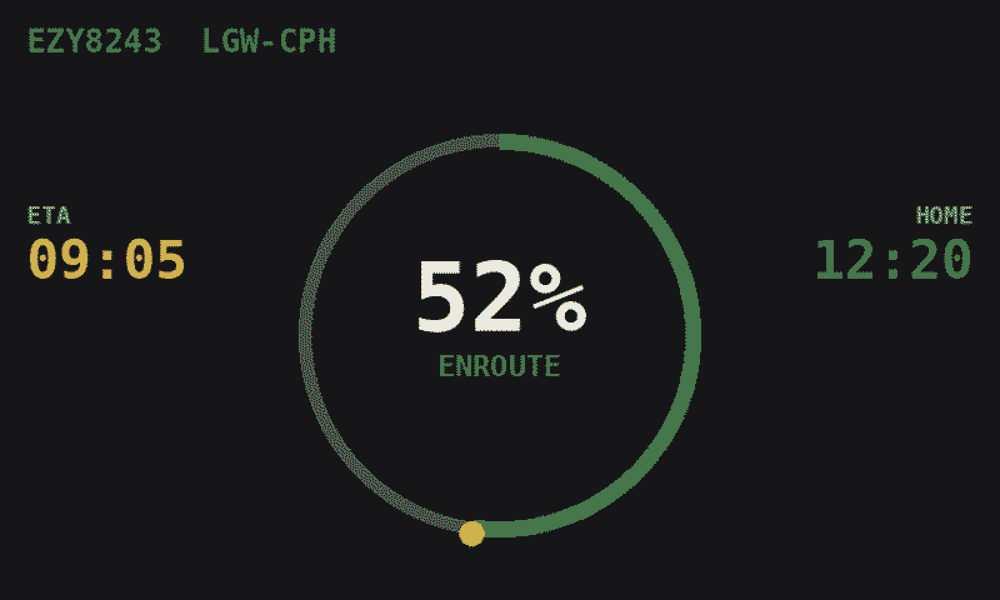

Solari board
the default
Split-flap departure board. Big route, landing time, home time, progress along the bottom.
Tiles dashboard
most information
Six colour-headed tiles: flight, route, landing, home, status with progress, and time to run.

Minimal
read it from the hallway
One enormous destination code and the two times that matter. Nothing else.

Duty timeline
best for long days
The whole duty as a single bar — report, each sector, then home — with a NOW marker.

Flip clock
retro
Mechanical flip-tile lettering, like an old station clock.

LED dot sign
retro
Dot-matrix lettering in the style of an airport gate sign.

Yellow grid
high contrast
Classic yellow-on-black departures grid. The most legible at distance.

Rail blue
calm
Softer railway-platform palette for rooms where a black panel would shout.

Swiss
typographic
White, gridded and restrained. Looks like a poster rather than a gadget.

Cockpit EFIS
for the nerds
Instrument-panel colours and layout. Familiar if you spend your day behind one.